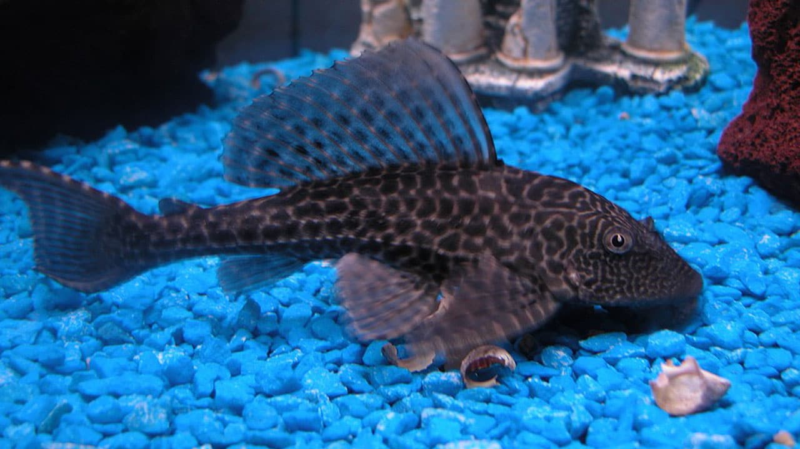

México es considerado un país megadiverso. Alberga al menos el diez por ciento de la diversidad mundial. Uno de los estados con mayor riqueza biológica en el país es Veracruz, pues posee cinco mil 472 especies de plantas vasculares, mil 361 de vertebrados y seis mil 272 especies de artrópodos. En la región central de la entidad se ubica la Reserva de la Biósfera Los Tuxtlas (RBLT), que fue decretada en noviembre de 1998 con una superficie total de 155 mil 122 hectáreas, en las cuales se presentan tres zonas núcleo. En esta Área Natural Protegida se alberga una vasta biodiversidad donde se estima la presencia de al menos cuatro mil 916 especies de las cuales 29 son endémicas.
Especie exótica invasora es un término poco común, pero que empieza a tomar auge, pues la problemática que conllevan estas especies es poco conocida. Para entender un poco mejor, partamos de algunas definiciones.
Una especie nativa es aquella que se encuentra dentro de su área de distribución natural. Una especie endémica es una especie cuya distribución se encuentra restringida a una región. Especie exótica se refiere a una especie que fue introducida a un área fuera de su distribución natural, y especie invasora es aquella que se desarrolla fuera de su hábitat natural y de forma inusual sin ayuda del ser humano, produciendo alteraciones en los ecosistemas.
La invasión de especies biológicas sucede cuando éstas son trasladadas a nuevas áreas donde se pueden desarrollar y se extienden. El movimiento se da en varios ámbitos como el transporte y la comercialización. La misma migración humana ha trasladado especies de un lugar a otro modificando los ecosistemas.
En México, a la llegada de los conquistadores se inició el intercambio de especies exóticas provenientes del viejo mundo y viceversa. Muchas de las que llegaron en los barcos con la tripulación, como las ratas, causaron alteraciones; hubo otras traídas intencionalmente para un uso específico, y algunas que hoy tenemos arraigadas incluso en nuestra dieta, tal es el caso de la albahaca, el cilantro, clavo de olor, trigo, entre otras. Actualmente las especies exóticas se siguen introduciendo a distintos ecosistemas debido a la comercialización, a la introducción de cultivos, al acuarismo y otras actividades.
A escala mundial, la pérdida histórica de biodiversidad y el creciente ritmo de extinción de especies no son aplicables a procesos naturales de extinción; son atribuibles al aumento de poblaciones humanas y a actividades que amenazan la biodiversidad. Se considera que el impacto por especies invasoras es la segunda causa principal de pérdida de biodiversidad sólo después de la destrucción del hábitat.